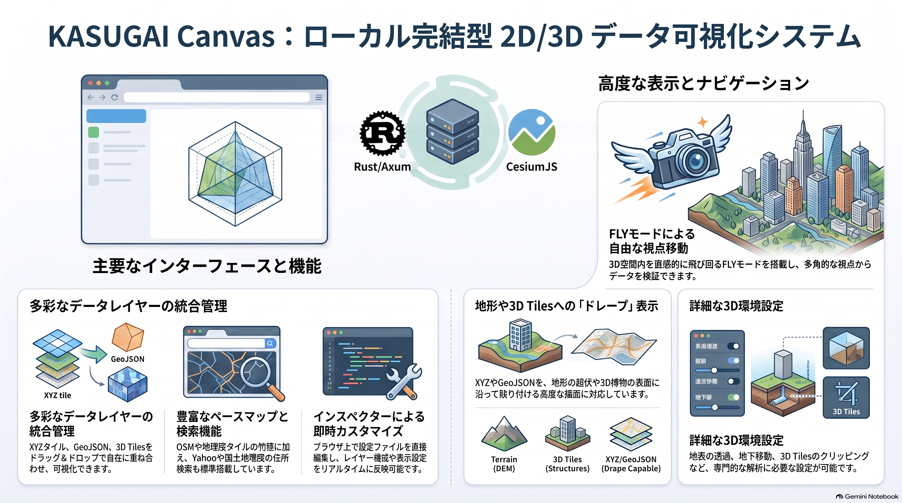
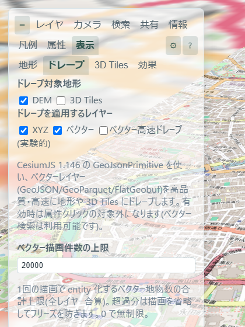
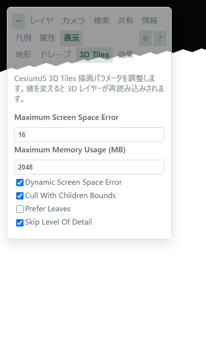
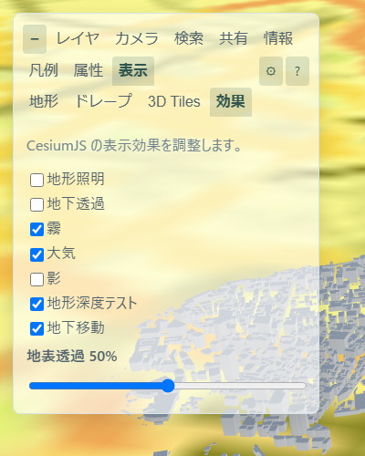

現行実装の構成
KASUGAI Canvas の現行実装は、純粋な CesiumJS フロントエンドを web/ ディレクトリに配置し、通常の HTTP サーバーから配信する構成です。オプションとして、Rust/Axum で最小限の静的ファイルサーバー（kasugai_canvas.exe）を同梱しています。Three.js は Cesium のビュー行列を共有する簡易な 3D 描画の枠組みとして組み込まれています。点群・3DGS・GLB 表示は未対応です。
web/ はエンジン別フロントのマルチエンジン構成です。ルートの index.html が ?engine=（既定 cesium）に応じて各エンジンへリダイレクトし、cesium/（現行アプリ）・maplibre/・openlayers/・leaflet/（.kasc プレイヤーとして実装済み）・gsimaps/（vendored 地理院地図を同一オリジン iframe で組み込む中間エンジン）・navara/（試験的な写実 3D エンジン。vendor/navara/ の同一オリジン dist が必要で、供給は vendor-proxy-sw.js（vendor 同一オリジン中継）による CDN 中継に一本化）を並べます。エンジン非依存のコード（.kasc ローダー・デコーダー・i18n・QML スタイルコンパイラ）は shared/ に段階的に集約します。メインエンジンは CesiumJS（開発の主対象・既定エンジン）であり、他エンジンは .kasc プレイヤーとしての互換実装です。各エンジンの特性と追加候補の優先順位は ライブラリ — 地図エンジンの選定と追加候補 を参照してください。
プロジェクトデータはエンジン非依存の projects/ に置き、projects/<id>/（id 単位で複数管理）が1プロジェクトです。各プロジェクトは .kasc+`DATA/` の組で、構成は projects/projects.json（一覧マニフェスト。外部登録分はサーバーがマージ）＋ projects/<id>/kasugai_canvas.kasc（プロジェクト設定）＋ projects/<id>/DATA/（プロジェクト専用データ。.kasc 行の相対参照はこの dir 基準）です。projects/DATA/ を置くと全プロジェクト共有のデータになり（../DATA/x 参照がここに解決）、納品構造では群・ワークスペース共有へ階層化できます。
設定は projects/<project_id>/kasugai_canvas.kasc から読み込みます。デフォルトは projects/default/kasugai_canvas.kasc です。ルート階層の kasugai_canvas.kasc は廃止しました。配布 ZIP と Windows インストーラーには web/・projects/ ディレクトリが同梱されます。

システム構成
┌──────────────────────────────────────────────────────────────┐
│ ブラウザ │
│ │
│ KASUGAI レイヤパネル（サイド） │
│ ├─ レイヤ / 凡例 / 検索 / 属性 / カメラ / 表示 / 情報 │
│ └─ 🔗 共有コピー / ⚙ 管理 / ? ヘルプ │
│ │
│ 管理ウィンドウ（⚙ で起動・モードレス） │
│ ├─ プロジェクト（切替・Inspector）/ AI / Google Maps │
│ └─ アプリ（ローカルのみ）/ その他 │
│ │
│ KASUGAI Basemap Selector │
│ └─ base: で定義した XYZ / TMS │
│ │
│ KASUGAI Navigation Toolbar │
│ ├─ Orbit / Fly モード切替 │
│ ├─ 2D / 3D 切替 │
│ └─ 方位コンパス │
│ │
│ CesiumJS + Three.js │
│ - Viewer / Scene / Globe │
│ - ImageryLayerCollection │
│ - Cesium3DTileset │
│ - TerrainProvider │
└──────────────────────────────────────────────────────────────┘
▲ HTTP (任意)
┌──────────────────────────────────────────────────────────────┐
│ 通常の HTTP サーバー または Rust / Axum │
│ │
│ 静的配信: │
│ - web/ (index.html→engine振分, cesium/, maplibre/, │
│ openlayers/, leaflet/, shared/, projects/) │
│ - projects/<project_id>/kasugai_canvas.kasc │
│ - projects/<project_id>/DATA/ │
│ │
└──────────────────────────────────────────────────────────────┘処理の流れ
- HTTP サーバー（任意で Rust/Axum）が
web/とprojects/を静的配信する - ブラウザは
projects/projects.jsonとprojects/<project_id>/kasugai_canvas.kascを読み込む - インスペクター設定からレイヤー、ベースマップ、カメラプリセットを生成する
.kasc内の相対パスはprojects/<project_id>/配下に解決される（例:DATA/sample.geojson）- CesiumJS が Terrain、XYZ、GeoJSON、3D Tiles を同一の 3D 地球ビューへ配置する
- XYZ・GeoJSON を
ImageryLayer/Entity/Primitiveとして地形へドレープする - Three.js は補助 3D 描画の枠組みとして組み込まれている。点群・3DGS・GLB 表示は未対応
UI パネルと主な機能
| パネル / コントロール | 主な機能 |
|---|---|
| Layers | XYZ / 3D Tiles / GeoJSON レイヤーの表示切替、グループ（排他グループは ○ のラジオボタン）、ドラッグ＆ドロップ並び替え、設定への永続化 |
| Basemap セレクタ | base: で定義したベースマップの選択・表示切替 |
| Camera | cam:
で定義したカメラプリセット、緯度・経度・高さ・ピッチ・ヘディングの手動入力、断面クリップ |
| Search | 住所検索（地理院 / Yahoo 選択可）、ベクトル検索（レイヤー・属性・値の三段階選択、テキスト検索、FlyTo） |
| Info / 凡例 / Attr | HTML 情報表示、凡例画像、選択地物の属性表示 |
| 表示 | 地形（DEM / ドレープ）、ドレープ対象レイヤー、3D Tiles パラメータ、表示効果 |
| 🔗 / ⚙ / ? | タブバー右端のアイコン。🔗 共有 URL コピー、⚙ 管理ウィンドウ（プロジェクト切替・Inspector・AI・Google Maps・アプリ・その他）、? オンラインヘルプ |
また、ナビゲーション ツールバーには Orbit/Fly
モード切替、fly_geojson:
で定義した経路の選択ドロップダウン、2D/3D
切替、方位コンパスが配置されています。描画（Draw）は Fly
パネル内の Draw タブ から行います。
URL パーマリンクの自動更新、🔗 ボタンによる共有 URL コピー、プロジェクト切替（?project=<project_id>）を実装しています。自動更新・ルート保存・タイルプロキシ等、サーバー API に依存する機能は静的配信では無効です。



Fly モード
Fly モードでは手動操縦か、fly_geojson:
で定義した経路の自動追従を選択できます。インスペクターに
fly_geojson: ルート名 | URL | speed=... | height=...
と記述すると、Fly
パネルのドロップダウンにルートが追加されます。ルートを選択し直すと、読み込みとルート状態をリセットして最初から再開します。
| 操作 | 動作 |
|---|---|
| マウスホイール | 速度を ±1 km/h で調整（手前：加速、奥：減速） |
| walk-help 速度入力 | flySpeed（km/h）を直接上書き |
| walk-help 補正入力 | flyHeight（m）を直接上書き（点の高さに対する操作中の補正） |
| 点選択 + 点高入力 | 各点の z（AGL）を編集 |
| 保存ボタン | 編集した点の高さを GeoJSON へ保存 |
| キー +/- | 速度を増減 |
| キー Q / E | 高さ補正を増減 |
Fly パネルの高さ表示は、手動時に
地形高（地表標高）と
補正（カメラ地上高）、ルート追従時に
地上高（AGL）（z + flyHeight）と
補正（flyHeight）をそれぞれ別行で表示します。
速度は正でも負でも可です。0
で停止、負でバック（手動はカメラを逆方向へ、自動はルートを逆方向へ）します。手動・自動で
flySpeed（km/h）と
flyHeight（m）を共有するため、モード切替時も値が継続します。
ルート描画
Fly パネルの Draw タブを選択すると Orbit モード に切り替わり、描画準備が整います。タブ内の Draw ボタンを押すと描画を開始し、右クリックで点を追加、右ダブルクリックで描画を終了できます。描画したルートは：
- ブラウザの IndexedDB に
drawn_route_YYYYMMDD_HHMMSSという名前で GeoJSON テキストとして保存（プロジェクト単位）。静的 WEB 公開でも保存でき、フォルダ選択や権限確認は不要です - インスペクターの「保存先フォルダ」を設定している場合は、フォルダ内の
.geojsonも Fly パス一覧へ読み込みます（File System Access API、Chromium系のみ・読み取り専用） - 保存・読み込んだルートは FLY パネルのルート選択に追加されます。「取込」ボタンで任意の
.geojsonファイルを IndexedDB へインポートでき、描画ルートを選択している時は「出力」（.geojson ダウンロード）「削除」ボタンが表示されます
描画ルートの GeoJSON には各点の高さ z を
heightReference: "Terrain"
として保存します。z
はその点の地形からの高さ（AGL）を表します。飛行時の実際のカメラ高さは
z + 地形高 + flyHeight
で計算します。flyHeight
は操作中の補正値であり、GeoJSON
には含まれません。セグメント内では始点・終点の 3D
位置と地形高を距離に応じて補間し、滑らかな高度変化にします。カメラは折れ点に到達する前から次の線分方向へ滑らかに旋回します（最後の
100m、または線分長の 30% 以内で旋回開始）。
URL パーマリンク
カメラ情報（latitude / longitude / height / heading / pitch）は
URL
のハッシュ（#latitude=...&longitude=...）に保持します。ハッシュはアドレスバーで書き換えてもページが再読み込みされないため、座標を変更すると現在のビューからそのまま
Google Earth
風（距離に応じた飛行時間＋一度ズームアウトして降下する弧）に FLYTO
します。project
などカメラ以外のパラメータはクエリ（?project=...）に保持します。
このハッシュ形式は 全6エンジン（Cesium / MapLibre /
OpenLayers / Leaflet / GSI Maps / Navara）で共通です。ルートの
?engine=
リダイレクトはハッシュをそのまま引き継ぐため、同じ URL
を別エンジンで開き直すと同じ地点が復元されます。移動するたびに
moveend（Cesium は camera.changed）でハッシュが自動更新されます。
正典は完全 Cesium 規約です — ハッシュには
latitude / longitude / height /
pitch / heading
の5キーのみをこの順で書き、zoom
など余計なキーは書きません。2D エンジンは読み込み時に
height → heightToViewZoom、書き込み時に zoom →
viewZoomToHeight で各々換算します（正典モデル: Cesium
規約の直下カメラ＝水平 FOV=60°、可視範囲は球体幾何で算出。
各エンジンは自キャンバス幅 px で換算し、同じ height
が全エンジンで同じ地面範囲になります）。
| エンジン | latitude | longitude | height | pitch | heading | ネイティブハッシュ |
|---|---|---|---|---|---|---|
| Cesium | ○ | ○ | ○ ネイティブ | ○ ネイティブ | ○ ネイティブ | —（正典そのもの） |
| Navara | ○ | ○ | ○ ネイティブ | ○ ネイティブ | ○ ネイティブ | — |
| MapLibre | ○ | ○ | ⇄ zoom 換算 | +90° 変換 | ○ 同規約（bearing=heading） | #<zoom>/<lat>/<lon>/<bearing>/<pitch> |
| OpenLayers | ○ | ○ | ⇄ zoom 換算 | −90° 固定 | ±反転 | — |
| Leaflet | ○ | ○ | ⇄ zoom 換算 | −90° 固定 | 0° 固定 | —（プラグインは #<z>/<lat>/<lon>） |
| GSI Maps（2D） | ○ | ○ | ⇄ zoom 換算 | −90° 固定 | 0° 固定 | iframe 内 #<z>/<lat>/<lon>/&base=… |
| GSI Maps（Globe） | ○ | ○ | ○（iframe 内ネイティブ） | ○（同上） | ○（同上） | iframe 内 #<h>/<lat>/<lon>/<power>/<hdg>/<pitch>/<roll>/ |
○=ネイティブ値、⇄=変換、固定=2D で持たないため固定値を書く。アドレスバーに現れるのはすべて正典形式で、ネイティブ形式が使われるのは GSI Maps の iframe 内部だけです。高さをネイティブに持つのは Cesium / Navara（と GSI Globe 内部）のみです。
pitch のルール: 正典の
latitude/longitude/height
はカメラ位置を表します。pitch
はスケール（zoom/height 換算）・回転（heading）には使わず、座標計算にのみ使うルールです
— 傾斜時（pitch ≠ −90）は 2D エンジンがカメラ位置の代わりに
groundCenterFromCam で視線の地面交点（heading 方向へ
h·tan(pitch+90°) 進んだ点）を表示中心にします。pitch ≥ 0
（地平線以上）は交点を定義できないためカメラ位置をそのまま使います。
2D エンジン側は初回ロード時に URL のビュー指定を
cam: プリセットより優先して適用します（プロジェクト切替時は従来どおりそのプロジェクトの
cam / データ範囲へ移動）。初回 moveend が URL
読み取りより先に発火するケースに備え、初期ビューを消費するまでハッシュの書き戻しを抑止しています。
カメラ pitch の扱い
URL パラメータ・カメラ入力・カメラプリセットの
pitch は Cesium の
camera.pitch（度数法）と同じ符号体系で扱います。水平を
0°、上向きを +、真下を −90°
とします。
| 方式 | 通常範囲 | 真下 | 水平 | 真上 | 備考 |
|---|---|---|---|---|---|
| Google Earth t | 0° 〜 90°（実用） | 0° | 90° | 180°以上も可 | 上限なし |
Cesium camera.pitch |
−90° 〜 0°（実用） | −90° | 0° | +90° | 3D モードではジンバルロック回避のため −84.99° にクランプ。2D モードでは −90° 固定 |
最終決定として、本システムでは Cesium
camera.pitch と同じ向きを採用 します。
旧形式（?latitude=... クエリ形式）の URL
も引き続き解釈されますが、クエリの変更はブラウザ仕様によりページ再読み込みが発生します。その場合も前回のカメラ位置を
sessionStorage から復元して即表示し、そこから新しい座標へ FLYTO
します。開いた後は自動的に新形式（ハッシュ）へ移行されます。
検索
住所検索は国土地理院住所検索 API
をデフォルトとし、Yahoo Local Search API を
yahooAppId
設定で追加できます。検索結果は住所・施設名を一覧表示し、クリックでその位置へ
FlyTo します。
ベクトル検索は読み込んだ GeoJSON /
layer:
データを対象に、レイヤー・属性・値の三段階で絞り込みます。テキスト検索と
FlyTo に対応し、非表示のベクトルレイヤーも検索対象に含めます。
属性・凡例・Info
属性は地物をクリックすると Attr パネルにテーブル表示されます。レイヤー属性一覧ボタンでは選択中または全レイヤーの属性・値を表形式で絞り込み表示できます。
凡例は legend:
で指定した画像を表示します。Info は
info: で指定した URL の HTML
をサニタイズして表示します。
座標・測地系の扱い
内部座標はすべて WGS84（EPSG:4326 系）で一元管理します。カーソル位置・プロジェクトデータ（GeoJSON は RFC 7946 で WGS84 固定）・パーマリンクのいずれも WGS84 で、表示形式・測地系への変換は表示層の最終段でのみ行い、描画側の CRS（球面メルカトル等）には依存しません。実装は全エンジン共通の web/shared/coords-format.js に集約しています。
- 表示形式: 度(10進) / 度分秒(DMS) / UTM / 平面直角座標系（I〜XIX系・原点は最近傍自動選択・縮尺係数 0.9999）。投影は Gauss-Krüger n⁶級数で PROJ と nm 級一致。
- 測地系:
#coords-datum（JGD2024・JGD2011 / JGD2000 / 日本測地系）に応じ、WGS84 の緯度経度を当該測地系の緯度経度に変換してから表示形式を適用します（日本測地系では Bessel 楕円体で投影）。 - 変換は国土地理院の公式パラメータ由来: 日本測地系は TKY2JGD.par Ver.2.1.2、JGD2000 は PatchJGD（平成23年東北地方太平洋沖地震）Ver.4.0.0 を
tools/convert_coords_datum.pyでバイナリ化したcoords-datum-*.binを使用。メッシュ節点の dB/dL をバイリニア補間（公式 TKY2JGD 準拠）、逆変換は固定点反復です。選択時のみ lazy fetch するため、未使用なら転送されません。PatchJGD 対象外の地域は測地成果2000と2011が同値のためそのまま表示します。
注意: 他測地系の座標は参考値です。WGS84 は動的フレーム（ITRF に追随＝現在位置）ですが、JGD2011/2024 の水平位置は 2011 年時点の実現値に固定されているため、現在位置と公式成果の間には地殻変動分（地域により十〜数十 cm）の差が累積しています。変換自体は公式パラメータで厳密に行いますが、「点の現在位置」の前提が異なるため、表示・コピーされる JGD2000・日本測地系・UTM・平面直角座標は参考値であり、測量成果としての利用は想定していません。このため座標表示では、WGS84 ネイティブの緯度経度（度・度分秒・既定測地系）以外の形式には末尾に （参考値） を付けて明示します（コピーされる文字列にも含まれます）。測量実務級の一致が必要な場合は GEONET 地殻変動補正（SemiDynaEXE/POS2JGD）の適用が別途必要です。
レイヤーと描画順
| 種類 | 実装 | 表示方法 |
|---|---|---|
| Terrain | Cesium TerrainProvider |
選択した DEM を Globe 地形として表示 |
| Base map | Cesium ImageryLayer |
Globe 表面へ XYZ / TMS を貼り付け |
| XYZ | Cesium ImageryLayer |
ImageryLayerCollection に追加。Terrain
上へ自動ドレープ |
| GeoJSON | Cesium GeoJsonDataSource /
Entity |
設定により追加。DEM / 3D Tiles 表面へ
ClassificationType で追従 |
| 3D Tiles | Cesium Cesium3DTileset |
設定により追加。Globe 上へ配置 |
レイヤーパネルの各行はドラッグ＆ドロップで並べ替えられます。並べ替えた順序は
ImageryLayerCollection の lower() /
raise() や DataSource の
index
へ反映されます。表示・非表示の切替や排他グループの動作は並べ替え後も維持されます。
地形、ドレープ、高さ基準
DEM テクスチャーは DEM から作った地形メッシュに Base map 画像を貼る表示です。ドレープは XYZ・GeoJSON などのレイヤーを DEM または 3D Tiles の地形表面の起伏に沿わせて貼る表示です。前者は地形の下地画像、後者は既存レイヤーの地形追従であり、別の処理です。
CesiumJS では ImageryLayer は Globe
表面へ自動的に地形に沿って描画されるため、XYZ タイルは特別な
TerrainExtension
不要でドレープされます。GeoJsonDataSource /
Entity については
heightReference: Cesium.HeightReference.CLAMP_TO_GROUND
または clampToGround: true
を指定して地形に吸着させます。
ドレープの設定フロー
DEMで Terrain 表示に使う DEM / TerrainProvider を選ぶ- コンテンツ別の行（ベースマップ・XYZ・ベクター・ベクター高速）ごとに、
DEM/3D Tilesのどこへドレープするかを個別に選ぶ - ベースマップ→DEM は Globe 表面へのベースマップ表示そのもの。 OFF で地表はベース色のみになる
| 設定UI | 役割 | 他の設定への影響 |
|---|---|---|
DEM |
Terrain 表示に使う DEM を選ぶ | デフォルトは
Re:Earth Terrain (楕円体高 / WGS84)。内包ソースは
Re:Earth Terrain（標高 / MSL、楕円体高 / WGS84）および Terrarium
DEM（AWS）です。新しい DEM を追加する場合は app.js の
demSources へ TerrainProvider 定義を登録する |
Terrain (DEM表示) |
選択した DEM を有効にする | DEM をドレープ対象として使うには ON が必要。3D Tiles の表示・選択は変更しない |
ベースマップ |
DEM=ON: Globe 表面へのベースマップ表示。3D Tiles=ON: ベースマップを 3D Tiles 表面へドレープ | DEM は既定 ON。3D Tiles は OFF |
XYZ / ベクター / ベクター高速 (実験的) |
各行ごとに DEM / 3D Tiles のどこへドレープするかを選ぶ | XYZ・ベクターは両対象が既定 ON。高速は OFF。例: XYZ は 3D Tiles のみ、ベクターは DEM のみ、といった組み合わせが可能。 地形ソース自体の表示は変更しない |
| 対象地形 | 有効になる条件 | ドレープ面 |
|---|---|---|
| DEM | Terrain (DEM表示) が ON |
表示中の DEM |
| 3D Tiles | URL を持つ 3D Tiles レイヤーが 1 つ以上表示中 | 表示中の 3D Tiles 表面 |
| DEM と 3D Tiles | 両方を ON にし、それぞれの有効条件を満たす | 条件を満たす DEM と 3D Tiles の両方 |
| どちらも OFF | なし | 適用レイヤーは通常表示 |
Terrain を ON にした場合、Base map は ImageryLayer
として Globe
表面へ描画されます。3D Tiles (BASEMAPドレープ) を ON
にすると、3D Tiles 表面へ別の ImageryLayer
相当のテクスチャを重ねます。Terrain を OFF にした場合も、表示中の
3D Tiles があれば Base map を 3D Tiles
表面へドレープし、それ以外は通常の ImageryLayer
を表示します。
XYZ タイルは設定の maximumLevel（または互換 alias
maxZoom）で個別に最大ズームを指定できます。未指定時はデフォルトで
25 まで取得します。minimumLevel（minZoom）で最小ズーム、
bbox=西経,南緯,東経,北緯 でタイルの存在範囲も指定でき、範囲外への
リクエストは発生しません（ローカル配置タイルの範囲限定に有効）。
これらのオプションは xyz:/wms:/wmts:
行に加えて base: 行でも有効です（例:
minZoom=2 | bbox=122,19,155,47）。CesiumJS の
UrlTemplateImageryProvider を使って表示します。
高さ基準
Terrain と 3D Tiles は、高さ基準を揃えなければ数十 m の上下ずれが生じます。データセットごとに高さ基準を確認して DEM / TerrainProvider を選択します。
| データ | 高さ基準 | 選択する DEM |
|---|---|---|
| 元の PLATEAU CityGML | 東京湾平均海面基準の標高（JGD2011 / EPSG:6697） | 標高基準の DEM / TerrainProvider を使用 |
| Re:Earth 配信の PLATEAU 3D Tiles | WGS84 楕円体からの高さ | Re:Earth Terrain (楕円体高 / WGS84) 対応
TerrainProvider |
| WGS84 楕円体高で作成されたその他の 3D Tiles・Cesium 地形 | WGS84 楕円体からの高さ | Re:Earth Terrain (楕円体高 / WGS84) 対応
TerrainProvider |
| 高さ基準が不明な 3D Tiles | データ仕様または tileset のメタデータを確認する | 確認後に上記いずれかを選ぶ |
Re:Earth Terrain は Cesium quantized-mesh
形式で配信され、Cesium.CesiumTerrainProvider
として読み込みます。elevation
は平均海面基準の標高（MSL）、ellipsoid は EGM2008
ジオイド高を加えた WGS84 楕円体高です。Terrarium DEM（Mapzen /
AWS）は height = R × 256 + G + B / 256 - 32768
でメートル単位の高さを復元し、カスタム
TerrariumTerrainProvider 経由で利用します。
制限・注意事項
3D Tiles への XYZ ドレープ
ラスター（ベースマップ / XYZ）の 3D Tiles ドレープは、現在の視野に応じた
ズームのタイル画像を縫合したキャンバスを、分類矩形（GroundPrimitive、
ベクタードレープと同じ per-pixel 機構）として 3D Tiles 表面へ貼る
画面連動方式です。カメラ停止ごとにカバーを再構築し、実質画面解像度の
ドレープになります（deck.gl TerrainExtension と同じ考え方）。
以前の Cesium3DTileset.imageryLayers 方式（1プリミティブ
≈1タイルの解像度固定）は廃止しました。
| 設定 | 効果 |
|---|---|
XYZ → 3D Tiles ON |
各 XYZ タイルを 3D Tiles 表面へドレープ（DEM 側の XYZ 設定とは独立） |
ベースマップ → 3D Tiles ON |
ベースマップを 3D Tiles 表面へドレープ |
ドレープ対象になった XYZ / ベースマップは、Globe 表面には重ねず、3D Tiles 表面のみに表示されます。
既知の制限
- カメラ移動中は移動前のカバーが残る
- カバーはカメラ停止(moveEnd)で再構築されるため、移動中は直前の ズーム・範囲のテクスチャが残ります。カバー外の領域は再構築まで ドレープなしで表示されます。
- 1 カバーあたり約 96 タイル上限
- 遠景では自動的に低ズームのカバーへ切り替わるため、常に 視点に見合った解像度になります。
CESIUM_primitive_outline非対応- この拡張を使用した 3D Tiles ではドレープが正しく描画されない場合があります。
2D エンジンの 3D Tiles ドレープ（deck.gl）
MapLibre / OpenLayers / Leaflet の各エンジンでも、deck.gl の
TerrainExtension を使って同様のドレープが可能です。
設定「表示」タブの「3D Tiles ドレープ（deck.gl）」で
対象レイヤー（ベースマップ / XYZ / ベクター）を選択します（既定は全て ON）。
- 表示中の
3dtiles:レイヤーがoperation:"terrain+draw"で地形ソース化され、対象レイヤーがその表面へテクスチャ投影されます。 - ベースマップ / XYZ（WMS・WMTS 含む）は deck.gl の
TileLayer、ベクターはGeoJsonLayerとしてドレープコピーが生成されます。 - deck.gl の TerrainCover はタイル範囲固定で初回ズームの解像度のまま 再描画されないため、ズーム確定ごとにカバーを破棄して現在ズームで再生成し、 解像度がズームに追従するよう補正しています。
DEM / 地形
- 初期表示は
EllipsoidTerrainProviderですが、Terrain (DEM表示)が ON の場合はRe:Earth Terrain (楕円体高 / WGS84)がデフォルトで読み込まれます。 CesiumWorldTerrainは同梱されていません。利用するには Cesium Ion へのアクセスが必要です。- Re:Earth Terrain は quantized-mesh 形式で標準
CesiumTerrainProviderで利用できます。国土地理院標高 PNG 等の独自 Terrarium 形式 DEM を追加する場合は、Cesium 用のTerrainProviderを実装してdemSourcesへ登録する必要があります。
静的ホスティングの注意
web/ディレクトリを nginx / Apache / IIS / Pythonhttp.server等に置くだけで、projects/<project_id>/kasugai_canvas.kasc、projects/projects.json、projects/<project_id>/DATA/を読み込めます。- 外部 3D Tiles や GeoJSON を読み込む場合、配信元が CORS を許可している必要があります。
- Yahoo AppID 等の認証情報を
.kascに記述すると、静的サイト上で誰でも参照できるため注意してください。
サーバー依存機能の制限
- 静的ファイル配信のみの状態では、ルート描画の保存、自動更新、タイルプロキシ、ローカルファイル API 等は利用できません。
- これらが必要な場合は Rust/Axum 版（
kasugai_canvas.exe）をローカルで起動するか、同等のサーバー機能を別途実装してください。
構想・未対応
現時点では未対応、または将来の構想として位置づけられている機能です。
Three.js 点群・3DGS・GLB
Three.js の枠組みは組み込まれているが、点群 / 3DGS / GLB 表示は未対応
🔗 QGIS・GDAL 配信
QGIS・GDAL を CesiumJS 向け変換・配信基盤とする構想